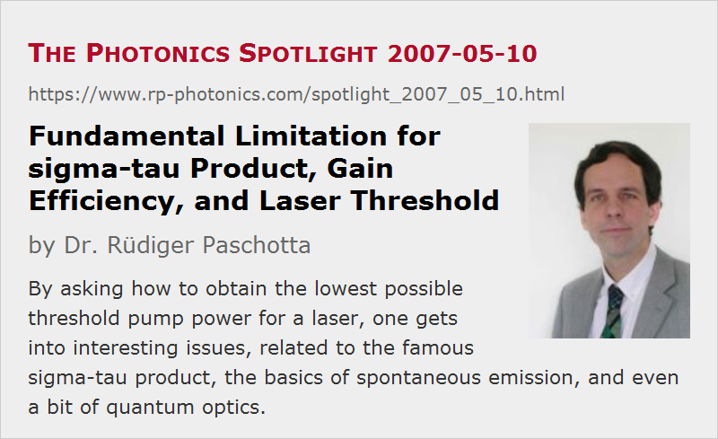

Fundamental Limitation for sigma-tau Product, Gain Efficiency, and Laser Threshold
Posted on 2007-05-10 (revised on 2008-03-22) as a part of the Photonics Spotlight (available as e-mail newsletter!)
Permanent link: https://www.rp-photonics.com/spotlight_2007_05_10.html
Author: Dr. Rüdiger Paschotta, RP Photonics Consulting GmbH
Abstract: By asking how to obtain the lowest possible threshold pump power for a laser, one gets into interesting issues, related to the famous sigma-tau product, the basics of spontaneous emission, and even a bit of quantum optics.

Ref.: encyclopedia articles on gain efficiency, threshold pump power, radiative lifetime, spontaneous emission
How to select a laser crystal for the lowest possible threshold pump power of a small laser device?
Of course, we want a medium with a gain efficiency as high as possible.
And that gain efficiency is essentially determined by the famous sigma–tau product (σ−τ product), the product of emission cross section and upper-state lifetime, apart from the effective mode area.
One now find finds that both σ and  vary quite a lot between different materials, but their product varies much less: those crystals with high laser cross section tend to have a low upper-state lifetime, and vice versa.
Why is that?
vary quite a lot between different materials, but their product varies much less: those crystals with high laser cross section tend to have a low upper-state lifetime, and vice versa.
Why is that?
Well, the upper-state lifetime is limited by the rate of spontaneous emission, and the strength of that depends on the laser cross sections and the emission bandwidth (related to the gain bandwidth) – see the article on the radiative lifetime for the details.
So higher cross sections mean a higher rate of spontaneous emission and thus a shorter fluorescence lifetime.
But there is one more factor – the gain bandwidth.
Look at broadband gain media such as Ti:sapphire, and you will see that they have small σ– products, while narrowband gain media such as Nd:YAG and Nd:YVO4 are much better here.
If one wants to have still lower threshold powers, one can hope to find those only for gain media with smaller emission bandwidth.
So perhaps forget about solids, and go for cold gases, for example.
products, while narrowband gain media such as Nd:YAG and Nd:YVO4 are much better here.
If one wants to have still lower threshold powers, one can hope to find those only for gain media with smaller emission bandwidth.
So perhaps forget about solids, and go for cold gases, for example.
There is yet another factor in the formula for the radiative lifetime: the transition frequency (or wavelength), which actually turns out to be quite important: for a given emission bandwidth in nanometers, the wavelength enters the formula with its fourth power. (Take care: δν = (c / λ2) δλ!) This is essentially why infrared lasers are easier to get started, compared with visible lasers or even UV lasers. The origin of that dependence is also interesting: at higher optical frequencies, space has more electromagnetic modes per frequency interval and volume, providing more opportunities for spontaneous emission. Which triggers the next idea: reduce the mode density by putting the emitting ions or atoms into a suitable cage. But this trick is more for the quantum optics freaks…
This article is a posting of the Photonics Spotlight, authored by Dr. Rüdiger Paschotta. You may link to this page and cite it, because its location is permanent. See also the RP Photonics Encyclopedia.
Note that you can also receive the articles in the form of a newsletter or with an RSS feed.
Questions and Comments from Users
Here you can submit questions and comments. As far as they get accepted by the author, they will appear above this paragraph together with the author’s answer. The author will decide on acceptance based on certain criteria. Essentially, the issue must be of sufficiently broad interest.
Please do not enter personal data here; we would otherwise delete it soon. (See also our privacy declaration.) If you wish to receive personal feedback or consultancy from the author, please contact him e.g. via e-mail.
By submitting the information, you give your consent to the potential publication of your inputs on our website according to our rules. (If you later retract your consent, we will delete those inputs.) As your inputs are first reviewed by the author, they may be published with some delay.
|  |
If you like this page, please share the link with your friends and colleagues, e.g. via social media:
These sharing buttons are implemented in a privacy-friendly way!